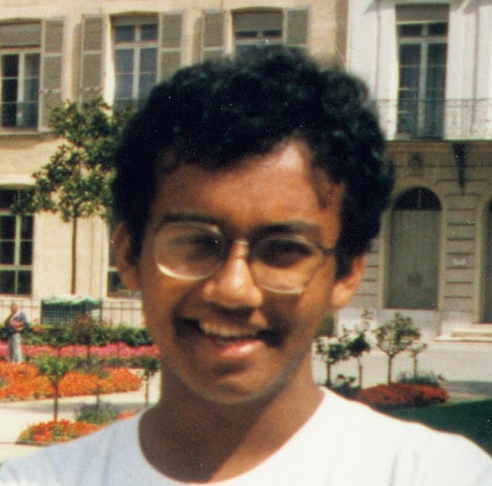
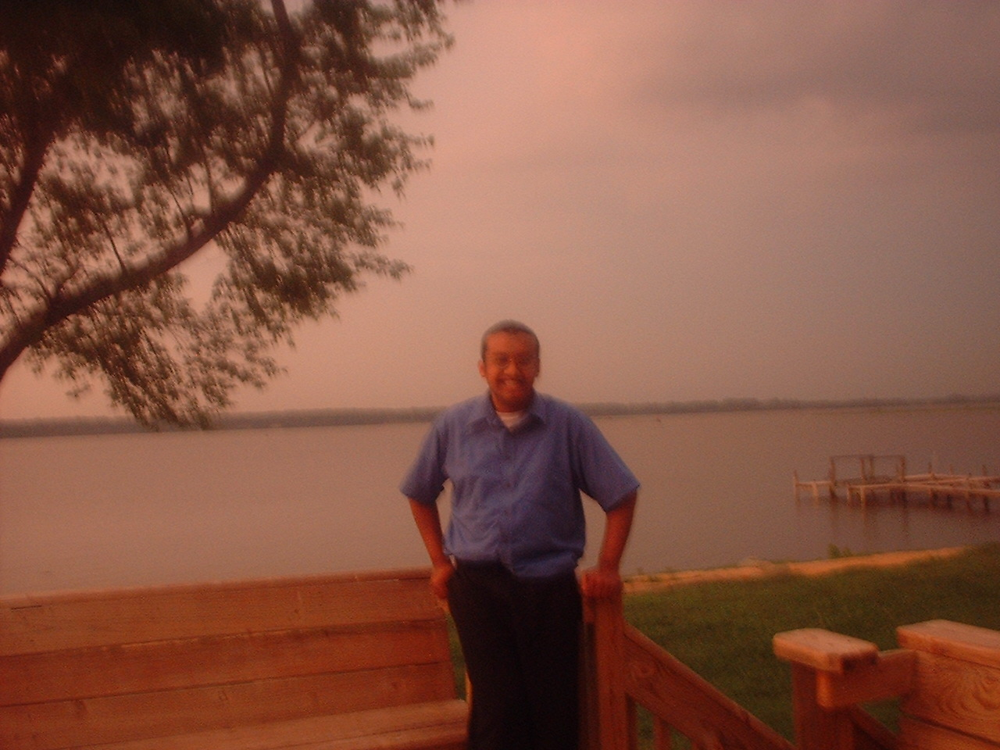
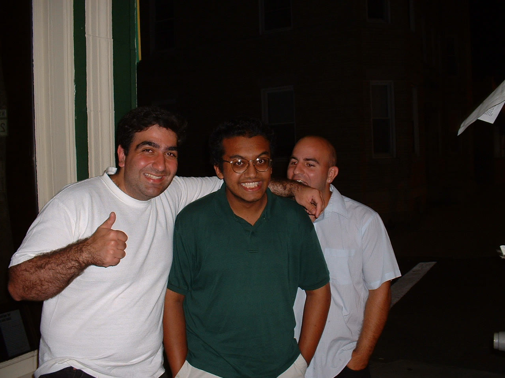

Home |
Links |
Research |
Classes |
Biography |
TUTORING: SHOWN BELOW ARE SOME OF MY STUDENTS |
TANIM ISLAM WEB PAGE |
| On 3 December 2007, I got my doctorate from the University of Virginia; pics here. I USED to be a graduate student at the University of Virginia's Department of Astronomy, headquarted at the Laboratorie de Radioastronomie at the École Normale Supérieure from March 2005 - December 2006. Here are some flattering pictures of me, before I ``let myself go...'' |
 |
 |  |  |
| UPDATED 28/10/2015 I am a big fan of KDE, so I decided to ``borrow'' a blue-purplish theme that I noticed at KDE-Look. |